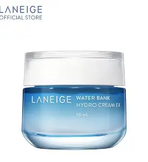

810.000đ 900.000đ
Thương hiệu: Laneige (Hàn Quốc)
Loại da phù hợp: Da thường, da khô, da hỗn hợp nhạy cảm.
Laneige Water Bank Blue Hyaluronic là thế hệ kem dưỡng mới nhất mang tính cách mạng của hãng. Được nâng cấp với Blue Hyaluronic Acid siêu nhỏ, sản phẩm không chỉ cấp nước đơn thuần mà còn đi sâu vào việc phục hồi hàng rào bảo vệ da bị tổn thương lên đến 62%.
Phiên bản dạng Cream có kết cấu mềm như bơ, tan chảy ngay khi chạm vào thân nhiệt và giữ ẩm bền bỉ cho da suốt 100 giờ. Thiết kế hũ kem hình vuông bo tròn với chấm cam đặc trưng ở nắp mang lại cảm giác cực kỳ hiện đại, thân thiện và sang trọng.